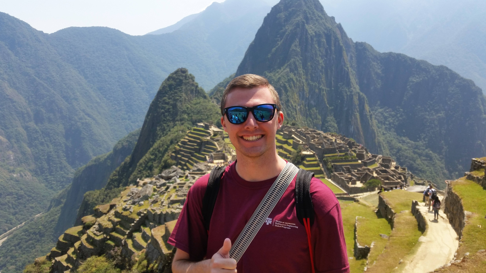
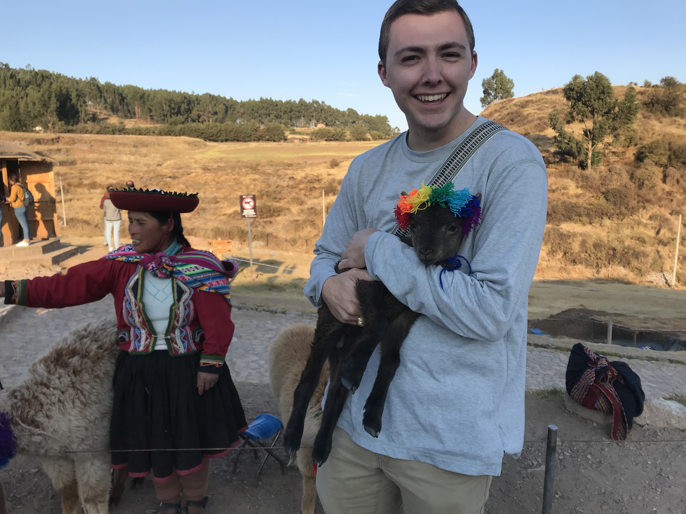
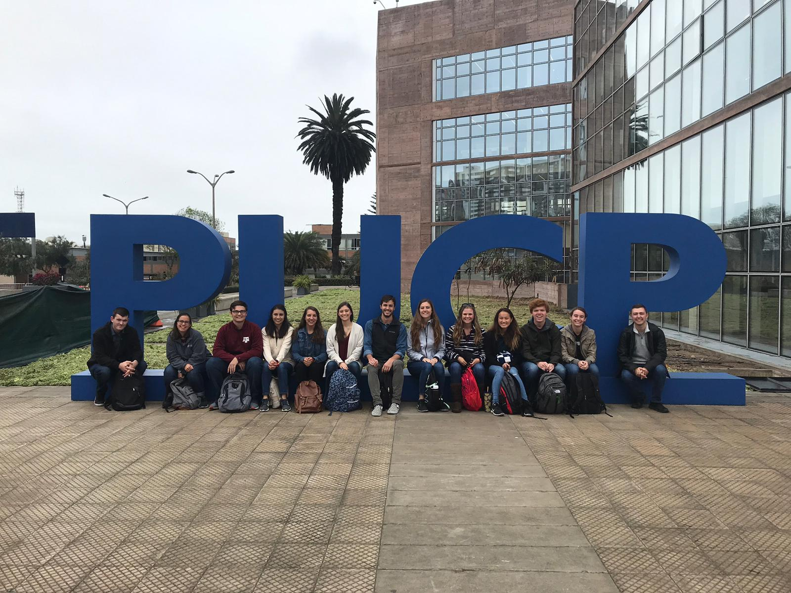
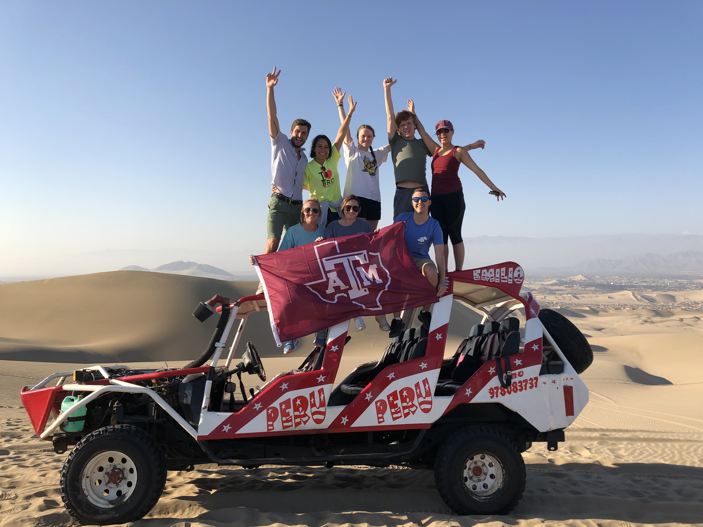
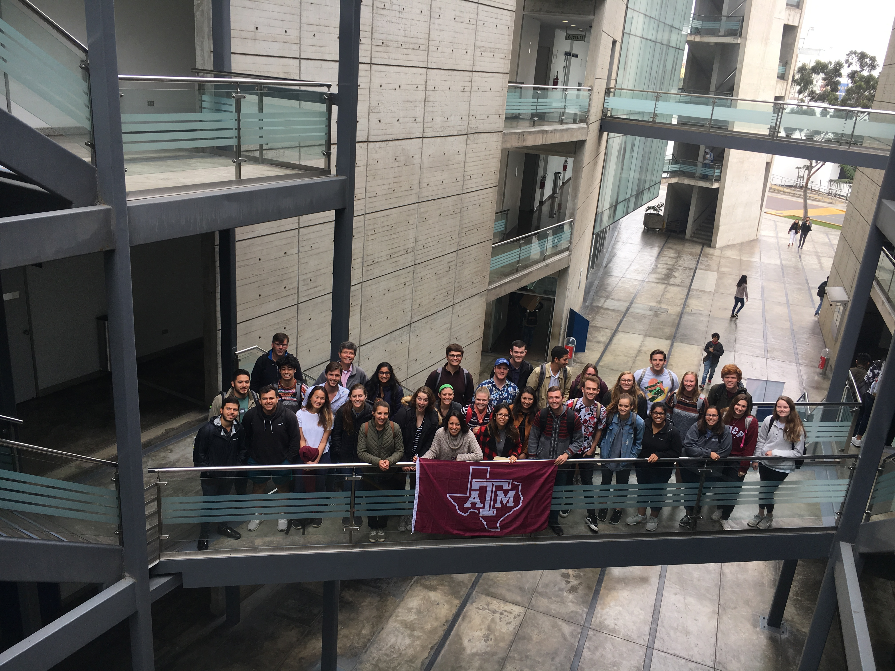
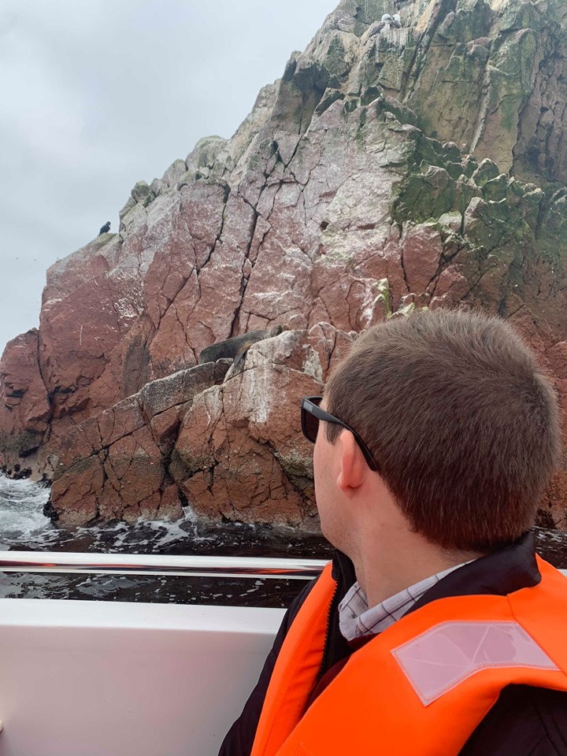
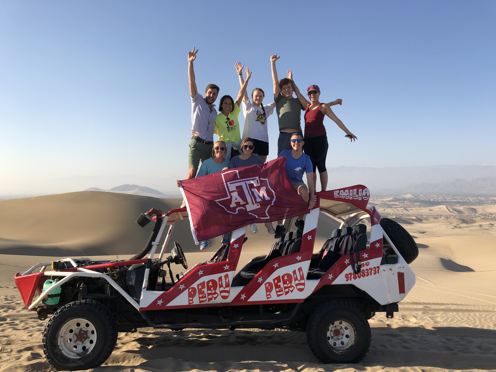
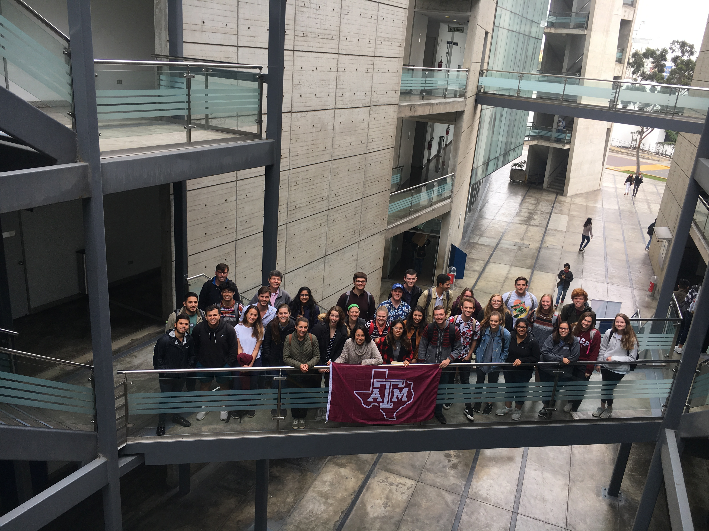
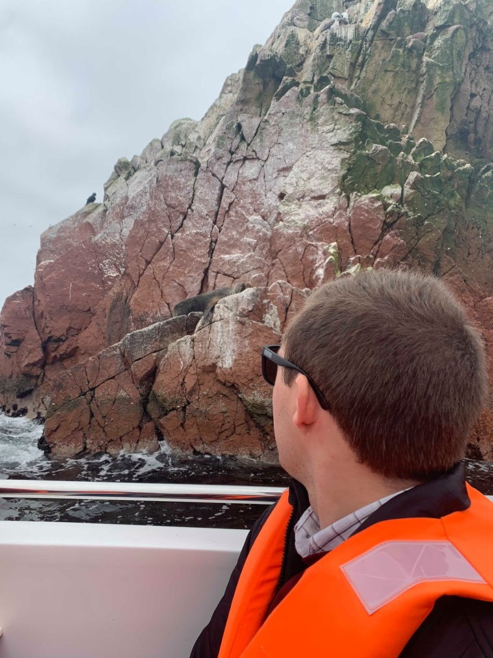

Peru Ethics in Engineering
I spent August 2019 (8/4-8/24) in Peru, studying Ethics in Engineering with Texas A&M University's first Ethics class in Lima!
I was granted the opportunity to travel with a small class of about 30 students to Peru to study Engineering Ethics in Lima (Pontificia Universidad Catolica de Peru) and tour other parts of the coutry. We had two great tour guides from the university who showed us around their beautiful city and to Cusco, Huacachina, and many other places as well! I got the chance to journey to Machu Picchu, eat some of the world's greatest cuisine at Restaurante Central, ride across the sand dunes of Ica, see sea lions, penguins, and Nazca Lines at a national reserve, and so much more! Below are some of my favorite photos from the trip. More of this will be updated later...
 
 




